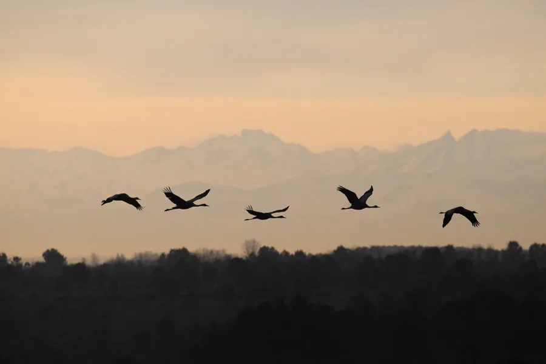
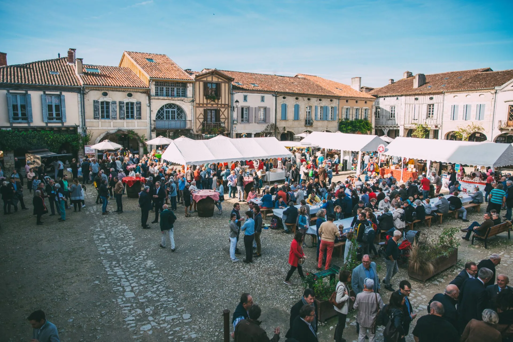
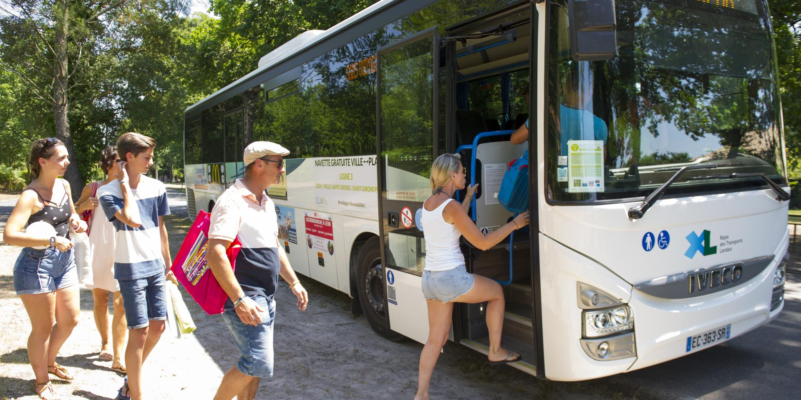

La comuna de Arjuzanx organiza de noviembre a febrero, salidas para ver las grullas, esta ave hace una parada en las Landas, uno de sus lugares favoritos para el invierno.
Podemos asistir a este fabuloso espectáculo durante un paseo o un fin de semana.
ENCUENTRO CON LA GRULLA COMÚN
La comuna de Arjuzanx organiza de noviembre a febrero, salidas para ver las grullas, esta ave hace una parada en las Landas, uno de sus lugares favoritos para el invierno.
Podemos asistir a este fabuloso espectáculo durante un paseo o un fin de semana.
En la siguiente página tienes un teléfono y un mail de contacto, pulsa AQUÍ.
También AQUI puedes encontrar más info para asistir, pero en francés

Durante dos días, (26 y 27 octubre 2024), la Place Royale de Labastide-d'Armagnac celebrará como es debido la fiesta del aguardiente más antiguo de Francia: mercados, conciertos, comidas, destilaciones
y un sinfín de actividades en el programa. Este pequeño pueblo medieval de unos 700 habitantes, celebra la fiesta de fin de vendimia e inicio de la destilación. En el
mercado podrás encontrar caldos de varias bodegas, productos de la zona e incluso ostras
Puedes pulsar AQUI
23ª EDICIÓN de la FIESTA del ARMAGNAC
Durante dos días, (26 y 27 octubre 2024), la Place Royale de Labastide-d'Armagnac celebrará como es debido la fiesta del aguardiente más antiguo de Francia: mercados, conciertos, comidas, destilaciones
y un sinfín de actividades en el programa. Este pequeño pueblo medieval de unos 700 habitantes, celebra la fiesta de fin de vendimia e inicio de la destilación. En el
mercado podrás encontrar caldos de varias bodegas, productos de la zona e incluso ostras
Puedes pulsar AQUI
Si quieres saber más, hay una web sobre la fiesta, pero en francés, para verla, pulsaAQUI

Recientemente, la web ha publicado LANDAS.EU las líneas de transporte público para poder desplazarnos
desde el interior de las Landas a la costa. Aunque, desplazarse por los municipios de la costa, es casi obligatorio usar vehiculo propio, ya que no hay servicio de trenes de
cercanías o líneas de autobus que recorran estos municipios.